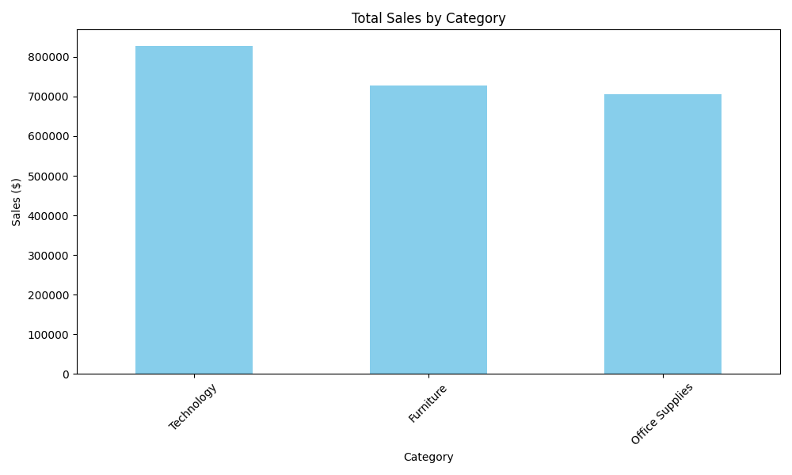
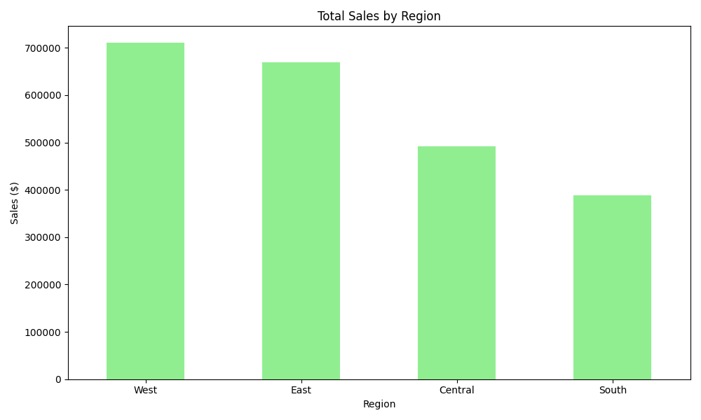
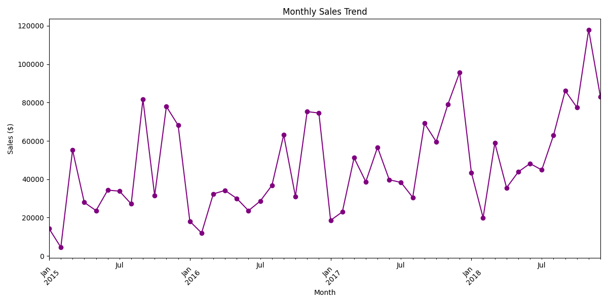
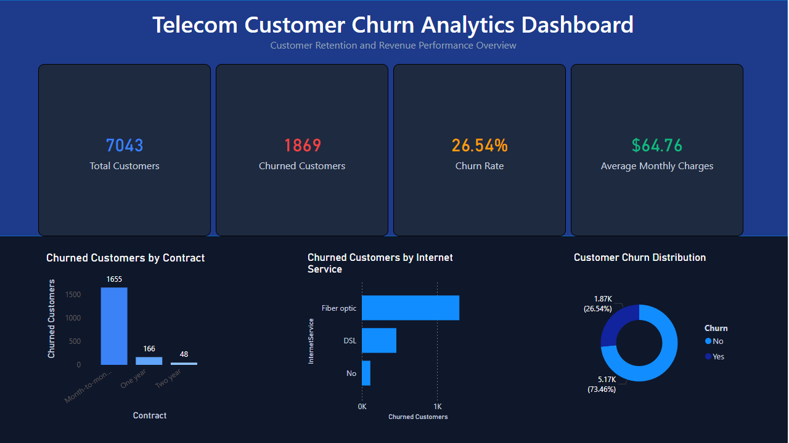

My Projects

AtlasDocs — AI Document Assistant (RAG)
Built a cloud-deployed Retrieval-Augmented Generation (RAG) app that lets users upload PDFs/TXT files, run semantic search, and receive citation-grounded answers.
- Multi-document ingestion + semantic retrieval
- Citation grounding + confidence scoring
- Mobile-optimized UI + Streamlit Cloud deployment
Case Study: How AtlasDocs Works
Problem
Teams store important information in PDFs and internal docs, but searching through them is slow and inconsistent. The goal was to enable fast Q&A with answers grounded in the original document text.
Approach
I implemented a RAG pipeline: chunk documents, generate embeddings, retrieve the most relevant chunks via vector search, then use an LLM to generate a clear answer with citations.
Architecture
What I Learned
- How chunk size/overlap affects retrieval quality
- How to keep answers grounded using citations + context limits
- How to deploy an AI app and manage secrets safely

Audit and Risk Assessments
Conducted audit, risk, and control assessments for clients at Ernst & Young, ensuring compliance with regulatory and internal standards, contributing $5M in revenue.
Data Analysis Dashboard
Built interactive dashboards using Power BI and Alteryx to identify process inefficiencies and visualize sales trends at Ernst & Young.

Technical Support Initiative
Provided technical support and troubleshooting as an intern at ACI Learning, securing networks and resolving hardware/software issues.

Sales Data Dashboard
Developed a Python-based dashboard using pandas and matplotlib to analyze retail sales data. Calculated trends by category, region, and month, finding Technology led with over $800,000 in sales. View Code on GitHub



Telecom Customer Churn Analytics Dashboard
Developed an executive-level Power BI dashboard analyzing customer churn across 7,043 telecom customers. Created KPI measures, retention analytics, and interactive visualizations to identify churn risks by contract type and internet service offerings.